-Livros nacionais-
"Eu receberia as piores notícias dos teus lindos lábios"
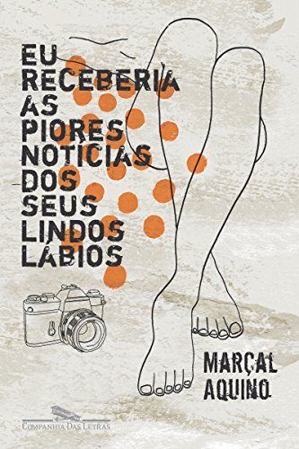
Escrito por Marçal Aquino.
Lançamento: 31/10/2005
Romance
“Queremos o que não podemos ter, diz o professor Schianberg, o mais obscuro dos filósofos do amor. É normal, saudável. diferencia uma pessoa de outra, ele acrescenta, é o quanto cada um quer o que não pode ter. Nossa ração de poeira das estrelas.”
Eu digo que esse é um dos melhores, se não for o melhor, romance nacional.
Clique
aqui para ler um resumo do livro (e talvez comprar).
"Vidas Secas"
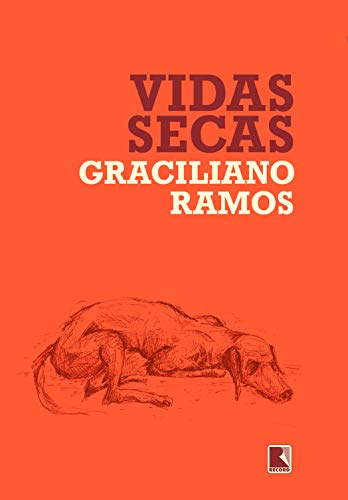
Escrito por Graciliano Ramos.
Lançamento: 1938
Romance
Ambientado no Nordeste brasileiro o livro "Vidas Secas" retrata os momentos de uma família de retirantes que atravessam o sertão nordestino. Ele explora a miséria, a seca e a busca por uma vida melhor.
É um triste, mas cru, retrato da sociedade brasileira e os problemas que nela existem.
Clique
aqui para ler um resumo do livro (e talvez comprar).
"O peso do pássaro morto"
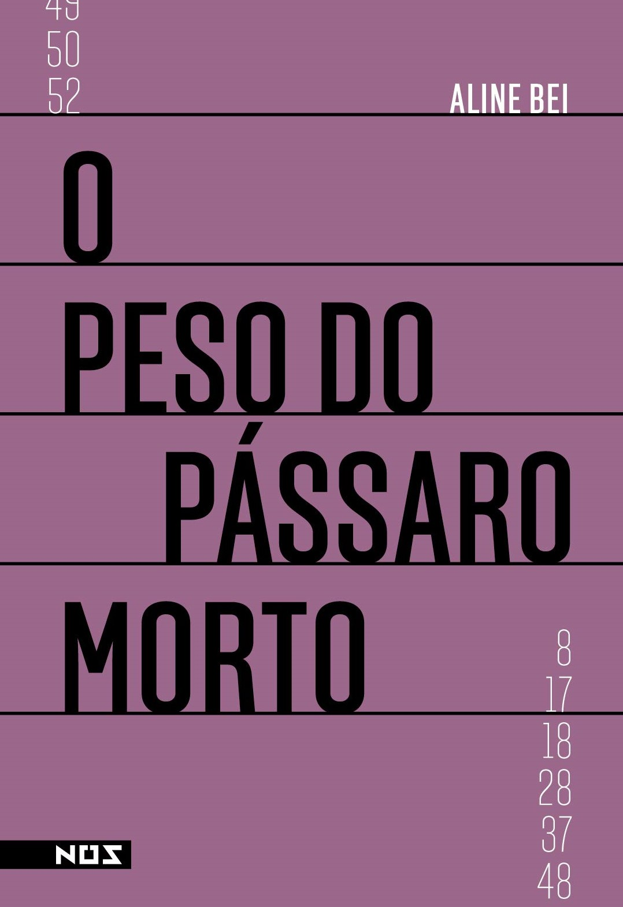
Escrito por Aline Bei
Lançamento: 01/05/2017
Romance
Acompanhamos a vida protagonista em várias idades, da infância até a fase adulta.Vemos ela correndo das suas dores...
"Quantas perdas cabem na vida de uma mulher?" É assim que começa essa experiencia simples e contudo intensa.
Clique
aqui para ler um resumo do livro (e talvez comprar).
-A rainha do crime (Agatha Cristie)-
"Os crimes ABC"
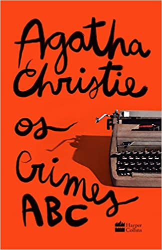
Escrito pela Agatha Cristie
Lançamento: 06/01/1936
Romance policial
Clique
aqui para ler um resumo do livro (e talvez comprar).
"A casa torta"
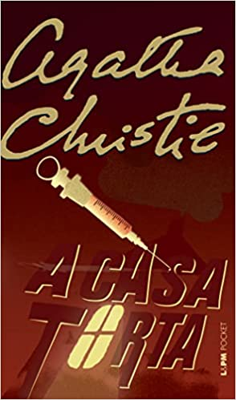
Escrito pela Agatha Cristie
Lançamento: Março de 1949
Romance policial
É uma das obras favoritas da autora!
Clique
aqui para ler um resumo do livro (e talvez comprar).
"O assassinato no expresso oriente"
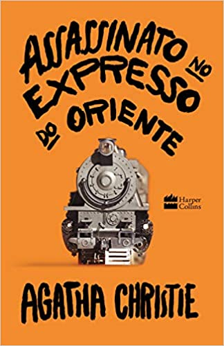
Escrito pela Agatha Cristie
Lançamento: 01/01/1934
Romance policial
Clique
aqui para ler um resumo do livro (e talvez comprar).
-Para nunca nos esquecermos-
"O diário de Anne Frank"
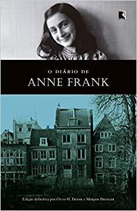
Escrito por Anne Frank, entre 12 de junho e 1 de agosto de 1944
Publicado em 25 de junho de 1947
Relata momentos vividos pelo grupo de judeus confinados durante a ocupação nazista dos Países Baixos.
Clique
aqui para ler um resumo do livro (e talvez comprar).
"Sob o céu escarlate"
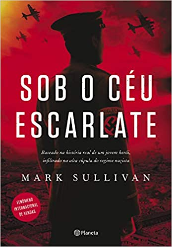
Escrito por Mark Sullivan
Publicado em 1 de maio de 2017
Ficção histórica
Baseado na história real de um infiltrado na mais alta cúpula do regime nazista.
Clique
aqui para ler um resumo do livro (e talvez comprar).
"O Sol ainda brilha"
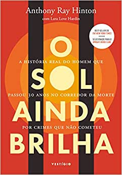
Escrito por Anthony Ray Hinton
Publicado em 15 de abril em 2019
Biografia
A história do inocente que passou 30 anos no corredor da morte.
Clique
aqui para ler um resumo do livro (e talvez comprar).
"Holocausto Brasileiro"
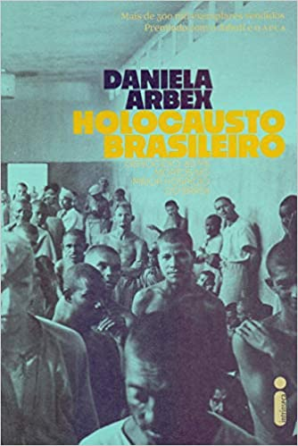
Escrito por Daniela Arbex
Publicado em 06 de julho em 2013
Livro-reportagem
A tortura de um dos principais hospícios do Brasil.
Vídeo da Bel Rodrigues sobre o livro.
Clique
aqui para ler um resumo do livro (e talvez comprar).
"Cova 312"
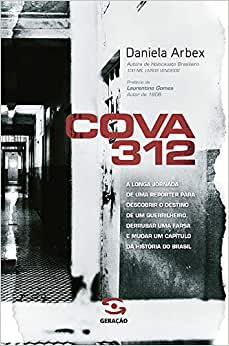
Escrito por Daniela Arbex
Publicado em 01 de maio em 2015
Livro-reportagem
A perda de uma mãe por causa da Ditadura Militar no Brasil.
Clique
aqui para ler um resumo do livro (e talvez comprar).